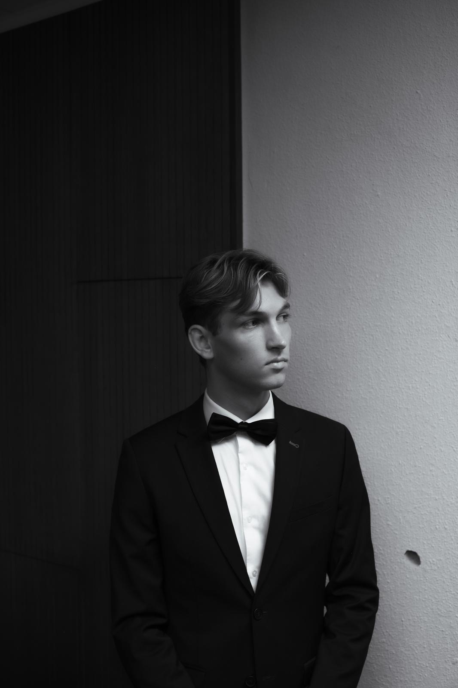
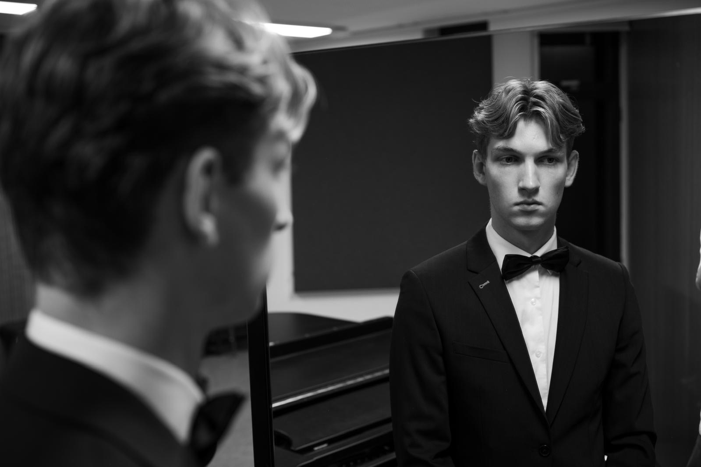
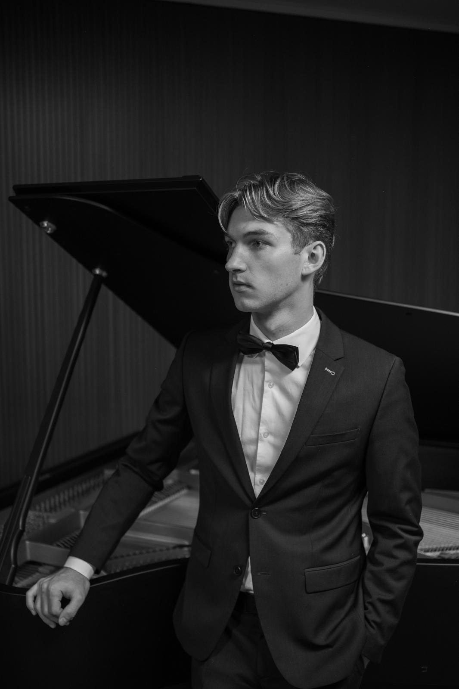

Klassieke pianolessen — Maastricht
Haal meer uit je pianospel.
Lessen voor absolute beginners tot en met het toelatingsniveau van het conservatorium — in de studio of online.
Plan een proefles- Studio
- Maastricht & online
- Lessen
- 45 of 60 minuten
- Niveau
- Beginner tot conservatorium
- Talen
- Nederlands & Engels

De docent
Ik begon met pianospelen toen ik zeven was. Wat begon als hobby, werd een droom: een professionele carrière als uitvoerend musicus combineren met een eigen lespraktijk.
Op dit moment studeer ik klassiek piano aan het Conservatorium Maastricht. Recente docenten van mij zijn onder anderen Hanneke van Wijk, Anastasia Safonova, Ashley Wass en Jeroen Riemsdijk. Op mijn achttiende maakte ik mijn debuut als solist, met het pianoconcert van Grieg samen met orkest.
— Ive
Ik wil een toekomst in de muziek voor iedereen mogelijk maken.
Inhoud van mijn lessen
Over mijn lessen-
01
Stabiele pianotechniek
Leer moeilijke passages spelen en ontwikkel tegelijkertijd sterke, onafhankelijke vingers.
-
02
Interpretatie & muzikaliteit
Wat bedoelt de componist precies, en wat is de historische context? En hoe gebruiken we die kennis in ons spel?
-
03
Klank & expressie
Hoe creëer je een prachtige klank en laat je alle kleuren van een stuk horen in je spel?
-
04
Muziektheorie & analyse
Duik in de theorie achter de muziek: bladmuziek lezen, frasestructuren analyseren en nog veel meer.


Concerten & optredens
Naast het lesgeven ben ik actief als pianosolist, kamermusicus en pianobegeleider. Al deze ervaring neem ik mee in mijn lessen.
ConcertenDe eerste les
is gratis.
Schrijf een paar regels over waar je staat met piano — ook als het antwoord ‘nog nergens’ is. Ik beantwoord elk bericht zelf, meestal binnen twee dagen.
Stuur een bericht- E-mailive.snijders@gmail.com
- Telefoon+31 61881945
- StudioMaastricht & online
- ReactieBinnen twee werkdagen